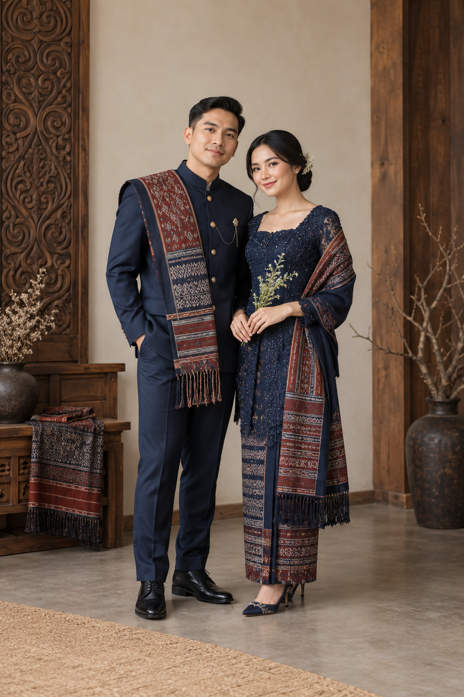

The Groom
Damar
Pratama
Putra dari
Keluarga Pratama
Keluarga Pratama

The Wedding Celebration Of
Kepada Yth.
Tamu UndanganHoras · The Wedding of
Save the date
Menuju hari bahagia
Demikianlah mereka bukan lagi dua, melainkan satu.
Matius 19:6
The Bride & Groom
The Groom
The Bride
The Celebration
Dengan penuh sukacita
Gereja Contoh
Medan
Gedung Acara Contoh
Medan
Our Story
Kisah sederhana menuju janji bersama.
Contoh cerita pasangan yang akan dipersonalisasi saat pemesanan.
Perjalanan baru kami dimulai dengan doa keluarga dan sahabat.
Captured Moments
Foto prewedding pasangan demo.
Wedding Gift
Kehadiran dan doa adalah hadiah terindah.
Informasi rekening diisi sesuai data pelanggan.
RSVP & Ucapan
Pratinjau formulir; data tamu tidak dikirim pada demo.